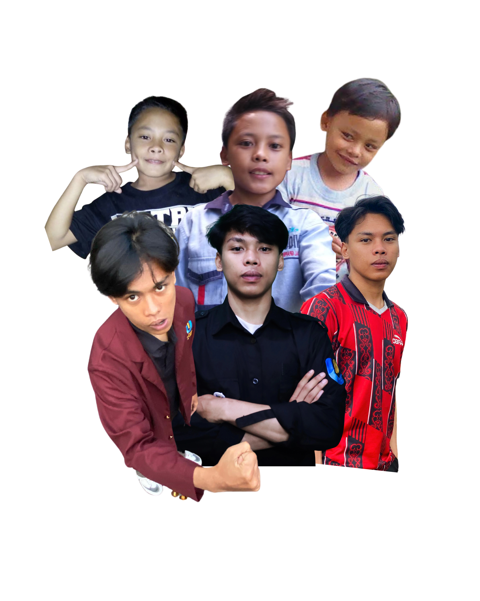

Creative Portfolio — 2026
Saya mendeskripsikan diri saya sebagai individu yang adaptif dengan perhatian besar terhadap detail. Saya terbiasa bekerja dalam lingkungan yang menuntut presisi tinggi, di mana integritas data dan keteraturan menjadi prioritas utama. Selain fokus pada aspek fungsional, saya juga memiliki apresiasi tinggi terhadap estetika minimalis dan efisiensi kerja, yang membantu saya tetap produktif dan terorganisir di berbagai situasi.
100%
WIN RATE PUASA
